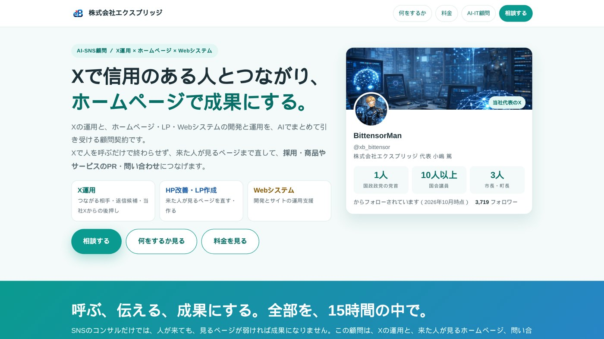
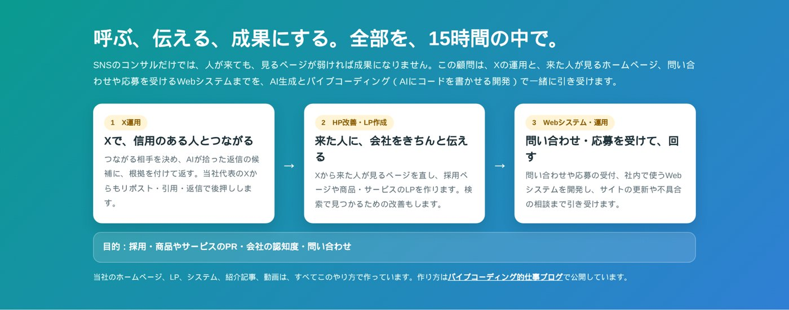

SNSコンサルだけでは成果にならない——X運用とホームページ・Webシステムをまとめた「AI-SNS顧問」を始めた理由
名古屋でAIシステムの開発をしている小嶋です。新しく「AI-SNS顧問」という顧問契約を始めました。
AI-SNS顧問（X運用 × ホームページ × Webシステム） https://exbridge.jp/ai-sns-komon.html

ひとことで言うと、Xの運用と、ホームページの改善・LPの作成・Webシステムの開発と運用を、AIでまとめて引き受ける顧問契約です。SNSコンサルとして始めるつもりでしたが、考えるほど、SNSだけでは足りないと分かりました。その理由を書きます。
SNSコンサルだけでは、成果にならない
当社のXは、この秋、国政政党の党首1人、国会議員10人以上、市長と町長3人にフォローしていただくようになりました。Xから当社の国会トラッカーのページに来た人は、10月13日〜19日の1週間で717人です。
ただ、人が来ることと、成果になることは別です。Xで知ってもらっても、来た人が見るページが弱ければ、問い合わせにも応募にもなりません。逆に言えば、Xで人を呼ぶ人と、来た人が見るページを直す人が同じなら、話が早いのです。
当社は、国会トラッカーやニュースのカードなど、Xから来た人が見るページを自分たちで作り続けてきました。Xで反応があれば、その日のうちにページを直せます。この「呼ぶ」と「伝える」が一体になっていることが、いちばん効いたと感じています。
顧問先の悩みは「採用」だった
もう一つのきっかけは、顧問先です。当社は、名古屋の創業50年を超える化学分析の会社で、AI-IT顧問として業務のシステム化やWebサイトの改善を担当しています。
この会社の顧客はメーカーや行政で、技術はしっかりしています。それでも悩みは採用でした。理系の学生や、大学の研究室に、会社のことを知ってもらう機会が少ないのです。
そこで、同じ会社でSNSの顧問も始めました。つながる相手は、分析化学や環境化学の教授と研究室、理系の学生、学会、業界の経営者、環境の行政です。PFAS（有機フッ素化合物）やマイクロプラスチックのように、分析の会社が詳しく語れて、国会でも繰り返し取り上げられている話題がたくさんあります。
ここでも同じことが言えます。教授や学生がXで会社を知っても、会社のページに「どんな装置で、何を測っているか」が書かれていなければ、興味はそこで止まります。Xとホームページは、一緒に直さないと意味がないのです。
3つを、15時間の中で

そこで、AI-SNS顧問は次の3つを1つの契約にしました。
- X運用：つながる相手を決め、AIが拾った返信の候補に、根拠を付けて返す。当社代表のXからもリポスト・引用・返信で後押しする
- HP改善・LP作成：Xから来た人が見るページを直し、採用ページや商品・サービスのLPを作る。検索で見つかるための改善もする
- Webシステム・運用：問い合わせや応募の受付、社内で使うWebシステムを開発し、サイトの更新や不具合の相談まで引き受ける
毎月の時間配分は打ち合わせで決めます。Xに時間を寄せる月もあれば、ホームページに寄せる月もあります。報告書は作らず、Xのアナリティクスと Google Search Console を御社で見られるようにして、打ち合わせで一緒に見ます。
AIを使うから、15時間で回る
この3つを月15時間で回せるのは、手間のかかる作業をAIにさせているからです。
- 返信できる投稿を探して、話題に合う材料を付けるのはAI
- 文案に引いた数字や言葉が、原文と同じかを確かめるのはプログラム
- ページやシステムのコードを書くのはAI（バイブコーディング）
人は、だれとつながるか、何を伝えるか、という判断に時間を使います。当社のホームページ、LP、システム、紹介記事、動画も、すべてこのやり方で作っています。このブログの記事も同じです。
今だけ、SEO診断の Kurage SEO と、アクセス解析とAIクローラーの訪問を測る Kurage Track & GEO を、顧問の中で無料で導入しています。Xから来た人がサイトのどこを見たか、検索やAI検索でどう見つかっているかを、最初から測れるようにするためです。
SNSは、Xに絞る
SNSはXだけを扱います。Instagram・Facebook・YouTubeも使ってきましたが、つながりを広げるならXがいちばんやりやすい、というのが実感です。
フォロワーの多い人がリポストや引用をしてくれると、その人のフォロワーにまで投稿が届きます。有名な人の投稿への返信も、その投稿を見に来た人の目に入ります。自分のフォロワーが少なくても、自分より拡散力のある人の力で広がる。国会議員や首長、大学の教授、企業の社長が、ご本人の名前で書いている場所でもあります。
国会議員にフォローしていただいた具体的な方法は、公開していません。顧問の中で、業界に合わせて実際にやりながらお伝えします。
料金と、お試し
料金は、AI-IT顧問契約と同じにしました。
- 月15時間・150,000円（税別）。月次契約で、縛りはありません
- 最初の1か月だけ、15時間を100,000円（税別・先払い）でお試しできます
- 通常の顧問料は、月初に請求書をお送りし、その月の分をその月の末日までにお支払いいただきます
20秒で分かるPVも作りました。
AI-SNS顧問のPV（約20秒） https://kurage.exbridge.jp/kpv/ai-sns-komon-pv
採用・商品やサービスのPR・会社の認知度・問い合わせのどれかで悩んでいる会社さまに、使っていただけたらうれしいです。
AI-SNS顧問（X運用 × ホームページ × Webシステム） https://exbridge.jp/ai-sns-komon.html
よくある質問
SNSコンサルとは、何が違いますか
SNSの運用だけでなく、ホームページの改善、LPの作成、Webシステムの開発と運用まで、同じ月15時間の中で引き受けるところです。Xで来た人が見るページまで直せるので、つながりが問い合わせや応募につながります。
投稿は代わりにしてもらえますか
投稿は、ご担当者さまご本人にしていただきます。当社は、返信の候補と根拠の材料をお届けし、文面に手を入れます。本人の言葉で返すことが、信用につながるからです。
政治の話をしないといけませんか
いいえ。当社の実績は国会議員ですが、つながる相手は業界ごとに決めます。化学分析の会社なら、大学の教授や研究室、理系の学生、業界の経営者、環境の行政などです。